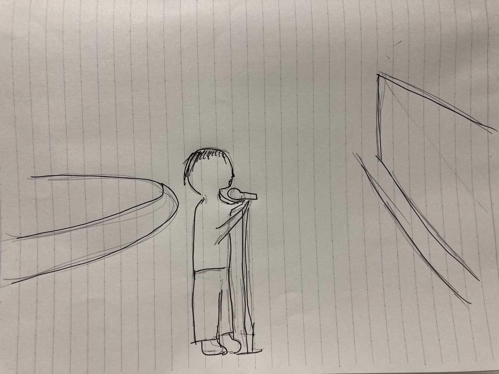
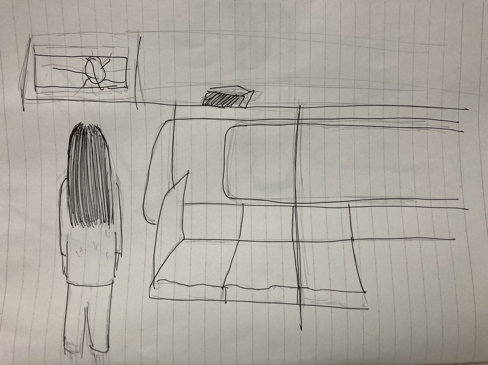

A:渋谷のハチ公前広場
日時：11/5 (土)
特徴：毎日Ed Sheeran のShape of you を歌っている人
最近バイト終わりにここを通ったら毎日この曲を歌っている人がいる。立ち止まって聞いたことはないから他の歌を歌っているのかもしれないが、タイミングをずらしてバイト先を出てもこの曲を歌っている。人が立ちどって聞いているわけでもないし、お金をいれるような箱が前に置いてあるわけでもないから、ちょっと不思議。

B
日時：11/7(火)
特徴：路線図を見る女の人
やや身長が高めの女性が斜め前に座っていた。座っている時からずっと路線図を見ていて、途中から立って路線図を確認していた。最初に手を合わせてお祈りしているかのように見ていた。それから2分くらい見て満足そうに席に戻った。携帯を持っていないから見に行ったのだな〜と思っていたら、携帯を取り出して何かを見ていたから、なぜ文明の力を使わないのかとても疑問になった。
